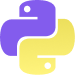

Un petit jeu de courses expérimentales créées dans Touch Designer, malgré la nouveauté du logiciel, j’ai réalisé un petit jeu de courses qui ce contrôle avec un mobile. Ce projet était un défi, car aucun jeu du genre n’a vraiment été fait auparavant dans ce logiciel. Ce projet a été réalisé dans le cadre de mon cours ‘Média Interactif IV'. Pour la programmation, j’ai utilisé la programmation de type ‘noeud’ de Touch Designer et j’ai tout modélisé les élément 3D avec Blender.
Crédit : Cédric Ménard
Touch Designer
Blender
Python
